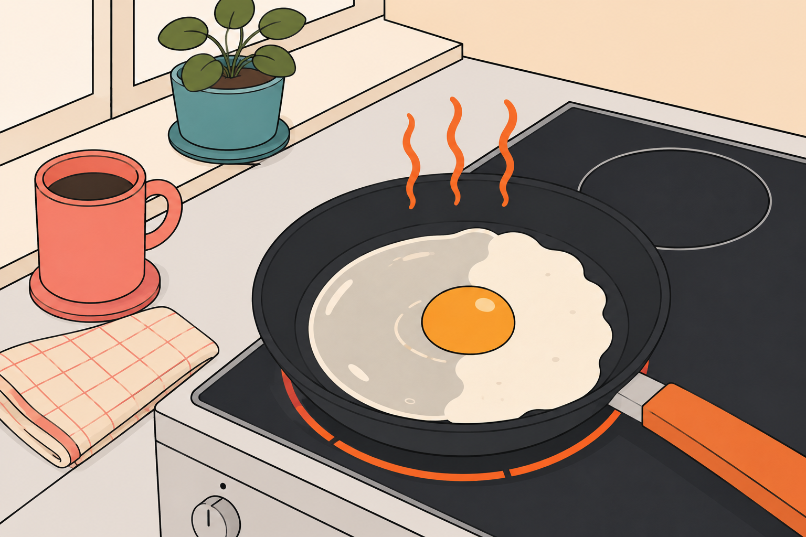
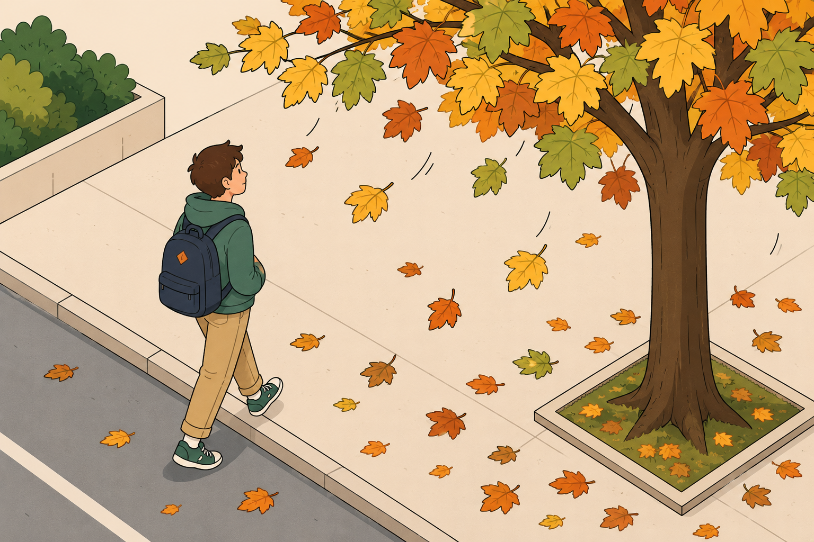

общая химия · тема 1 · что такое ваша химия?
выпуск №01 · 8 минут чтения
а что, по-твоему, химия?
спойлер: она не только в химической лаборатории. она у тебя на сковородке, в кроксах и даже в опавших листьях под ногами.
Что первое приходит в голову, когда слышишь «химия»? Что-то занудное, абстрактное, еще и с кучей формул? Ага, обычно ещё потом все говорят: «о, химия, никогда я её не любил(а) и не понимал(а), сложно». Ладно, не буду тебя грузить. Давай просто проживём вместе твой обычный день — от утреннего будильника до дороги в школу — и я по пути покажу тебе, где же прячется химия. Спойлер: на самом деле прятаться она умеет так себе.
утречко, погнали на кухню
Представь: ты проснулся(лась), заходишь утром на кухню, разбиваешь яйцо на раскалённую сковородку, чтобы приготовить любимую глазунью. Но что происходит? Белок из прозрачного стал белым и плотным. Можешь объяснить, почему?

Нет, это не магия вне Хогвартса — это химия. От нагрева белки меняют свою структуру: они сворачиваются и становятся твёрдыми. И заметь — мы ещё ни в одну формулу не залезли, просто посмотрели на сковородку и уже поймали химию с поличным.
Или давай другой пример: ты порезал(а) яблоко, собрался(лась) его съесть, залип(ла) в тикток и всё пропало — яблоко успело потемнеть. Что за дела? Тоже химия. Пошло окисление: вещества мякоти яблока среагировали с кислородом из воздуха, в результате чего яблоко и темнеет. Вот тебе ещё один пример химии прямо у тебя на кухне.
Ну что, уже не так скучно? Вот и я говорю: химия не где-то там в лабораториях с пробирками, она с нами каждый день. Это про то, как одни вещества превращаются в другие и как эти превращения меняют всё вокруг. Даже твой завтрак.
запоминаем
химия — это наука о веществах и их превращениях.
Не переживай: о веществах и их превращениях мы ещё поговорим в следующих уроках. А пока просто держи мысль в голове и пошли дальше по твоему дню — на завтраке химия не заканчивается.
Кстати, если на секунду отвлечёшься и вспомнишь сегодняшний день, сможешь заметить ещё парочку процессов, например:
- сахар, который утром растворял(а) в чае
- запотевшее зеркало в ванной
- подгоревший тост
химия даже в кроксы забралась!
Окей, а ты носишь кроксы? А задумывался(лась) ли когда-нибудь, из чего они сделаны? Вот тут подключается химия высокомолекулярных соединений. Оказывается, химия прямо на твоих ногах! Их делают из полимеров — это такие длиннющие молекулы, из которых изготавливают кучу всего, в том числе и пластик.
Аспирин пьёшь, когда голова болит? А лучше не надо! Мне вот, кстати, только что мой ученик подсказал, что аспирин не рекомендуют принимать детишкам и подросткам до 18 лет из-за высокого риска синдрома Рея, редкого, но тяжёлого заболевания! Так я вот, например, узнала про такие последствия, а мы с тобой вместе в любом случае добрались до фармацевтической химии. Химики из этого направления как раз придумывают и испытывают лекарства, чтобы мы быстрее приходили в себя от всяких болезней (а заодно внимательно читали обо всех побочных эффектах и противопоказаниях).
А ещё тебе раз сто, наверное, говорили налегать на рыбу, орехи, авокадо — мол, полезные ненасыщенные жиры. Но почему полезные-то? На это ответит биохимия — она разбирается в том, как разные вещества работают у нас внутри.
↓ найди химию в обычных вещах
кликай по предметам — узнаешь, какая область химии за ними стоит
↑ выбери предмет
дорога в школу: химия выходит на улицу, но не одна
Итак, яичница съедена, кроксы на ногах. Собираемся и выходим из дома. И вот тут нас должна настичь самая интересная мысль: всё, что мы встретили с тобой в рамках наших сборов, не живёт само по себе. Секундочку, сейчас поясню!
Смотри: то, что кроксы — «дар» химии, мы уже, конечно, выяснили 😄. Но почему же они такие лёгкие, а при этом практически неубиваемые? Тут подключается физика — объясняет, как силы давят на материал и что в итоге получается с его деформацией. Снова про орехи: может ли только химия ответить на вопрос, почему полезные жиры реально полезны телу? Без биологии не разберёшься — это её тема, обмен веществ.
Ничего не существует в вакууме, понимаешь? Все науки сплетены в одну междисциплинарную паутинку, и один и тот же процесс можно разглядывать с разных сторон.
И вот представь теперь: сентябрь, осень, в школу максимально не хочется. Под ногами шуршат листья разного цвета. Виной всему — листопад. Процесс один, но объясняют его на самом деле разные науки.
биология
объясняет, почему опадают листья и как работает механизм адаптации дерева к зиме
химия
объясняет, как меняется состав листьев, из-за чего они теряют зелёный пигмент и желтеют
физика
объясняет, почему листья вообще падают на землю — сила тяжести, привет!

Получается, процесс один, но объясняют его разные науки по-разному, и все они связаны друг с другом.
заключение
Ну что, мы прожили с тобой один самый обычный день — от глазуньи на сковородке до жёлтых листьев по дороге в школу — и оказалось, что химия окружала нас буквально на каждом шагу. Пока ты завтракал(а), одевался(лась) и шёл(шла) в школу, вокруг тебя без остановки что-то превращалось, реагировало и менялось — просто раньше, возможно, ты не так усердно приглядывался(лась). Все это и есть химия: наука о веществах и их превращениях. И как настоящий супергерой, она никогда не вершит великие дела в одиночку!
увидимся в следующем выпуске — будем разбираться, что такое вещество и зачем химикам понадобились формулы.
— edspire